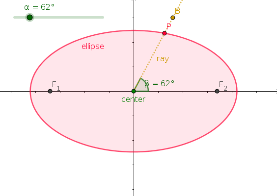

Section 3.1 Ellipse in GeoGebra
Subsection 3.1.1 Drawing an Ellipse
In GeoGebra, we construct an ellipse by choosing two points, the two foci, together with a point on the ellipse. Among other things, we will discuss the significance of the two foci here, but first we construct an ellipse. It might be useful to choose the two foci \(F_1\) and \(F_2\) to lie on a horizontal line, e.g., the \(x\)-axis, and symmetrical around the origin. Then choose a third point, say \(A\) through which the ellipse should pass (you can immediately hide this point \(A\) again — you only need it when you want to change the ellipse itself).
We now attach a point \(P\) on the ellipse that we can control with an angular slider: First, we find the midpoint between \(F_1\) and \(F_2\) (it should be origin if you placed the two foci symmetrical around the origin) — this point is called the center of the ellipse. Next, add a slider to your construction that let’s you vary an angle \(\alpha\) between \(0^{\circ}\) and \(360^{\circ}\text{.}\) Use this value of \(\alpha\) to construct an angle \(\beta\) at the origin measured counterclockwise from the \(x\)-axis — a point \(B\) should appear that (together with the size of the angle \(\beta\)) you can now control with your slider. Add an ray originating from the center through that point \(B\text{.}\) Finally, the intersection of this ray with the ellipse is the point \(P\) we are looking for — and its location on the ellipse can now be controlled by the slider!

Measure the distances \(F_1P\) and \(F_2P\text{.}\) Observe that as you move \(P\) around the ellipse, the sum of the two distances is constant. In fact, this is one way to define an ellipse.
Definition 3.1.1.
An ellipse is the locus of those points of the plane whose sum of distances to two fixed points \(F_1\) and \(F_2\) (the two foci of the ellipse) is constant.
This definition immediately yields the following "gardener’s method" (also known as "thumbtack construction"): an ellipse can be constructed using two pins and a string.
Subsection 3.1.2 The Parts of an Ellipse
We need some more vocabulary. Ellipses have two axes of symmetry; the larger one, called the major axis of an ellipse, is the segment through the two foci connecting two antipodal points (the vertices) of the ellipse, the smaller one, called the minor axis of an ellipse, is the segment perpendicular to the major axis through the center connecting antipodal points on the ellipse. Half the respective segment from the center to the point on the ellipse are called the semi-major axis and semi-minor axis, respectively. The length of the semi-major axis is usually denoted \(a\) (so the major axis has length \(2\cdot a\)), the length of the semi-minor axis is usually denoted \(b\text{.}\) Previously, we looked at the sum of the distances \(F_1P\) and \(F_2P\text{:}\) This sum can actually be expressed in terms of \(a\) and/or \(b\text{,}\) how? Also, measure the distance from the center to one of the foci \(F_1\) or \(F_2\text{,}\) this length is called linear eccentricity \(c\text{.}\) Can you explain why \(a^2=b^2+c^2\text{?}\)
The eccentricity \(e\) of the ellipse is given by \(e=\frac{c}{a}\text{,}\) i.e., the ratio of the distance from the center to a focus to the length of the semi-major axis. Obviously, this ratio is a number between \(0\) and (less than) \(1\text{.}\)
Measure the distance from your focus \(F_1\) to its nearest vertex (see picture above). We call that distance \(p\text{.}\) Now, construct a circle of radius \(\frac{p}{e}\) around this vertex, and denote the point of intersection with the line through the two foci (i.e., along the major axis — this should be your \(x\)-axis) on the outside of the ellipse by \(D\text{.}\) Draw the line perpendicular to the major axis through this point \(D\text{.}\) This perpendicular line is called a directrix of the ellipse. We now measure the distance \(F_1P\) from the focus \(F_1\) to the point \(P\) on the ellipse, and compare it with the distance of \(P\) from the directrix (hint: construct a perpendicular line to the directrix through \(P\)}) by looking at the ratio of these two distances. Can you now complete an alternative geometrical definition of an ellipse?
Definition 3.1.2.
An ellipse is the locus of those points of the plane for which the ratio of \(\ldots\)
Subsection 3.1.3 Ellipse as an Equidistant Set
There is another alternative definition of an ellipse: Consider the ellipse with the two foci \(F_1\) and \(F_2\) together with a point \(P\) on the ellipse. Construct a ray originating from \(F_1\) through the point \(P\text{.}\) Then construct the circle centered at \(P\) through the other focus \(F_2\text{.}\) Denote the intersection point of the ray with this circle by \(I\) (be careful, you might get two intersection points — we want the one that is on the opposite side as \(F_1\) to \(P\)). Now, locate the "Locus" tool (you should find it in the "Construct" tool section, below "points" and above "Lines", or — if you installed GeoGebra locally on your computer — in the fourth tool menu from the left):
Using this tool, select the point \(I\) as your locus point together with the angular slider. The result is an object (probably automatically named something like "loc1") that looks like a circle. Check that indeed it is circle, centered at \(F_1\text{,}\) and observe how the (smaller) circle around \(P\) through \(F_2\) rolls inside this bigger circle, touching it at the point \(I\text{.}\) Thus, the smaller circle centered at \(P\) tells you that the distance \(F_2P\) and the distance from \(P\) to the bigger circle (centered at \(F_1\text{,}\) and which contains \(F_2\)) are the same. Can you now complete our third definition of an ellipse?
Definition 3.1.3.
An ellipse is the equidistant set (or midset) to \(\ldots\)
Subsection 3.1.4 Foci of an Ellipse
Let us finally check whether the name focus is justified for either of the points \(F_1\) and \(F_2\text{:}\) So, only consider the ellipse with the two foci \(F_1\) and \(F_2\) together with a point \(P\) on the ellipse. Construct the tangent \(t\) to the ellipse at \(P\text{.}\) Compare the angles between \(t\) and the line through \(P\) and \(F_1\text{,}\) and between \(t\) and the line through \(P\) and \(F_2\text{.}\) What is your observation (using your slider, move \(P\) around the ellipse)? What does this last observation mean in terms of rays of light emitted from a lightbulb located at one of the foci and reflected on the (inside of) the ellipse?